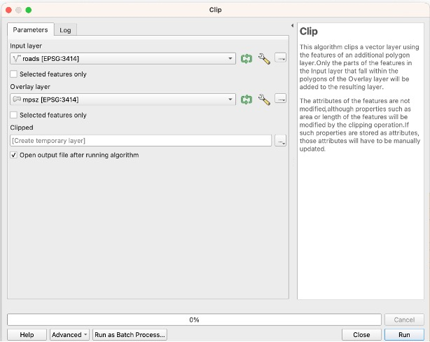
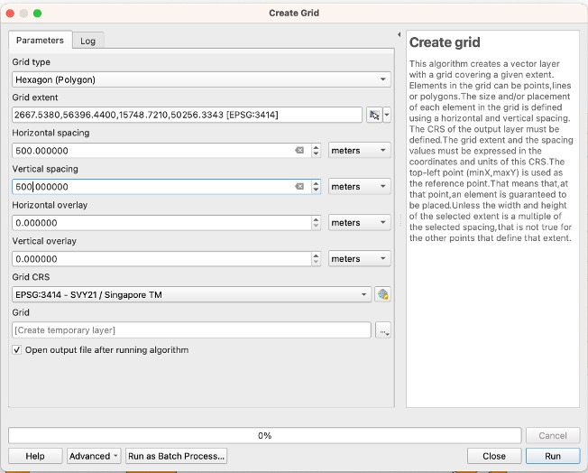
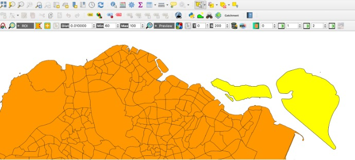
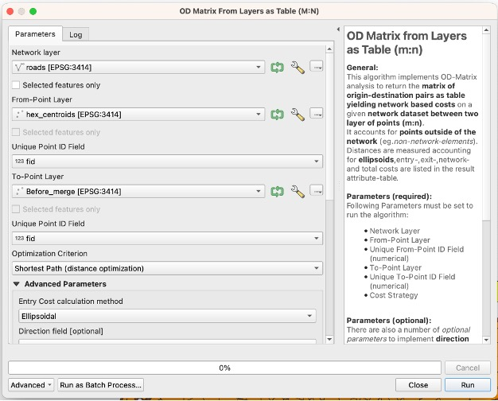
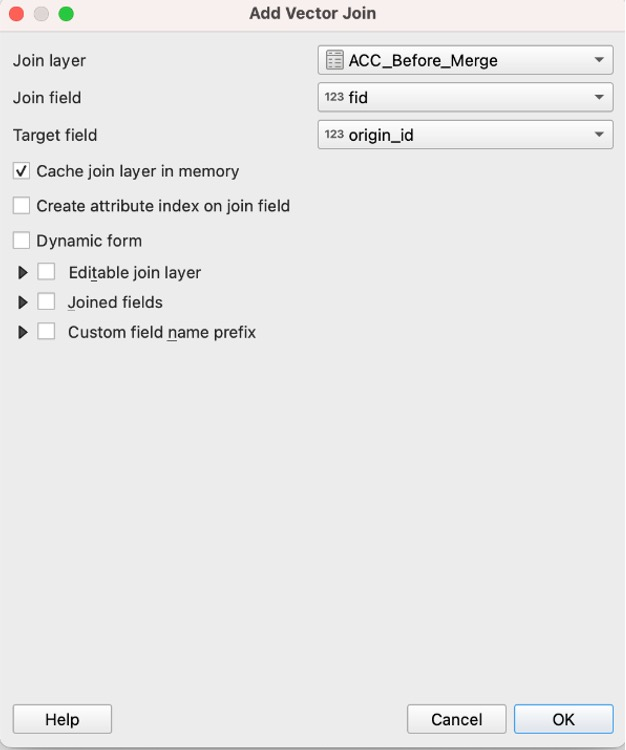
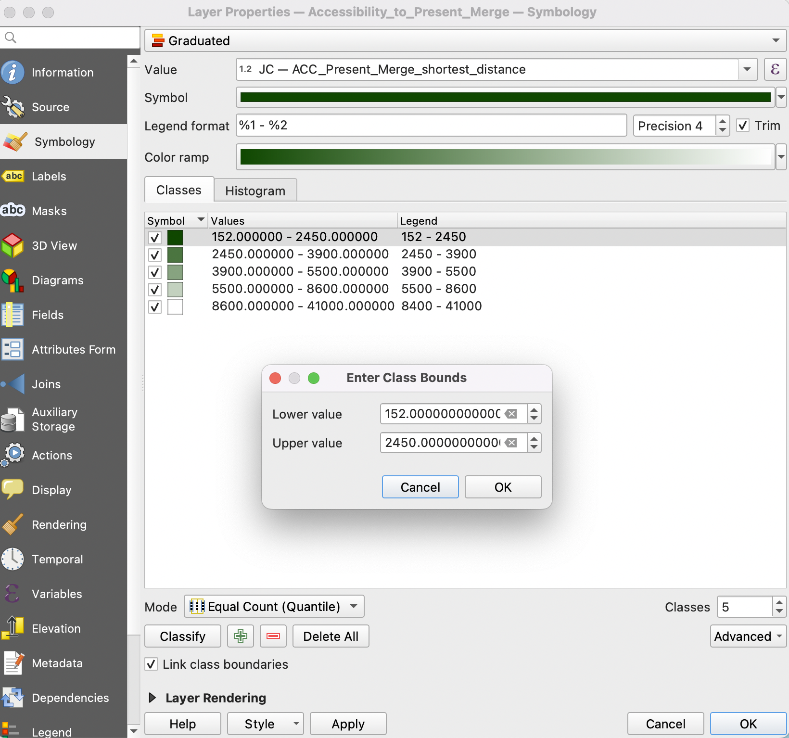
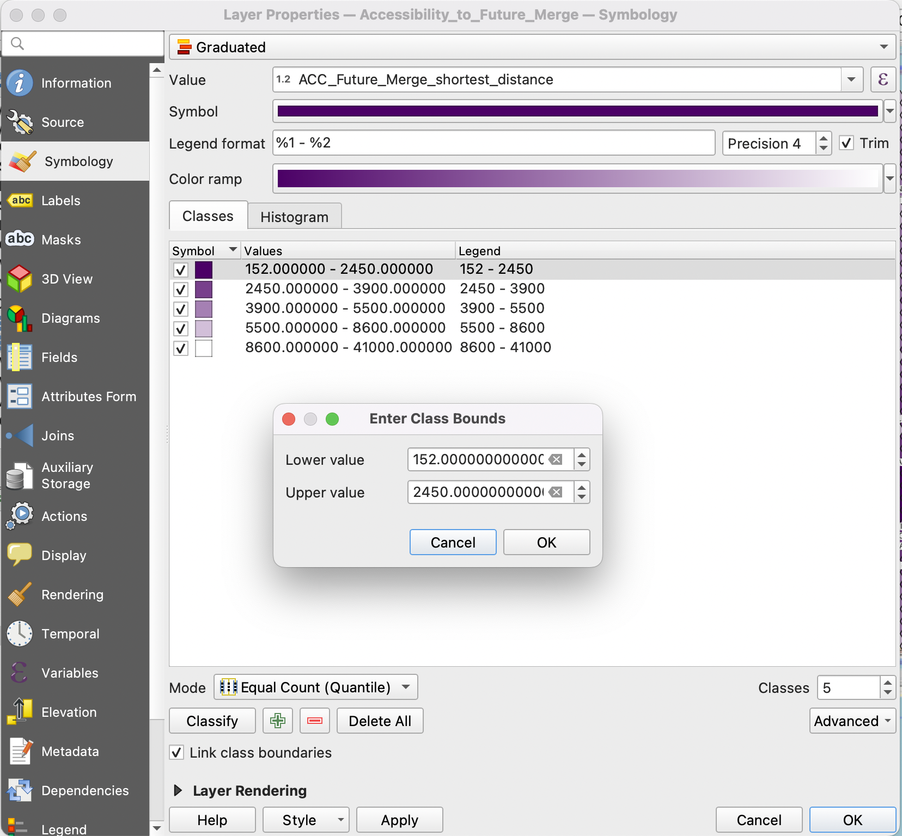

Methodology
Steps for Analysis
Creating a QGIS Project
Open QGIS and create a new project. From the top of the screen, go to Project > New. Before we officially start doing the project, let us change the Project CRS to Singapore SVY21 / ESPG: 3414. By default, the globe at the bottom of the screen says ESPG:4326. Click it then you will see a window. Find ESPG:3414 through the Filter/Search option and search 3414. Click Apply then OK to exit.
Adding Vector Layers
Firstly, add in the Master Plan Subzones by going to Layer > Add Layer > Add Vector Layer. The Data Source Manager window should pop up. Under Source, click on the [...] icon which will bring you to your computer’s file directory. Locate the Master Plan 2014 Subzone Boundary (No Sea) shape file. Click the Add button once you are ready.
Saving as GeoPackage
To save the layer in GeoPackage format, click on Export > Save Feature As…. Afterwards, a window pops up, which is where we save the layer into GeoPackage format. For “Format,” choose GeoPackage. The file name should be SG and make sure it is inside your GeoPackage folder. Name the layer as MPSZ2014. Check that the CRS is set to Project CRS: EPSG:3414 - SVY21 / Singapore TM. Click OK once done. Remove the data source layer.
Clipping Roads
Repeat the Adding Vector Layers step for the roads layer from OpenStreetMap. Activate the MPSZ2014 layer. Go to Vector > Geoprocessing Tools > Clip. Choose the roads layer as the input layer and the overlay layer as MPSZ2014. Click on Run. A temporary layer named ‘Clipped’ will be created.

Right click on the ‘Clipped’ temporary layer and export all features into the GeoPackage, saving the layer as Roads.
Preparing the Schools CSV File
Following this, let us add in our layer of school information by going to Layer > Add Layer > Add Delimited Text Layer. In the Data Source manager window, click on the [...] icon and find found.csv to be your File Source. Choose CSV (comma delimited values) as the File Format. Tick Point coordinates under Geometry Definition. X field: results.X, Y field: results.Y. Ensure that the Geometry CRS is EPSG:3414 - SVY21 / Singapore TM then click Add once done.
Save this in GeoPackage format and name the layer as JCs.
Creating Hexagon Layer
From the menu bar, select Vector -> Research Tools -> Create Grids. A window appears. Follow the following modifications:
Grid type: Hexagon (Polygon)
Grid extent > Calculate from layer: MPSZ2014
Horizontal spacing: 500
Vertical spacing: 500
Grid CRS: EPSG:3414 - SVY21 / Singapore TM

Click the Run button once it is good to go then Close. A temporary Grid layer will display. We must shape this to the Singapore shapefile by clipping it. Go to Vector > Geoprocessing Tools > Clip. Input layer: Grid, Output layer: MPSZ2014.
However, this is the whole of Singapore, but we only need the mainland. Toggle Editing so that we can delete the outer islands. Perform a Select Features by Freehand (highlighted features will be in yellow) and draw around the excess hexagonal grid then Delete Selected. Remember to click Toggle Editing again to save changes.

Save the output in GeoPackage format. Name the layer as Mainland_Hex. Delete the temporary Grid layer.
Computing Hexagon Centroid
From the menu bar, select Vector > Geoprocessing Tools > Centroids. A window appears. For the Input layer, select Mainland_Hex. Click Run then Close.
A temporary Centroids layer will display. Save the output in GeoPackage format. Name the layer as Hex_Centroids. Delete the temporary Centroids layer.
Installing QNEAT3 Plugin
From the menu bar, Plugins > Manage and Install plugins. Type in QNEAT3 in the search bar and install it. Close the dialogue box once finished.
Before Merge (Before 2019) Steps
1. Select by Expression: Right click the JCs layer and Open Attribute Table. Click on the Select features using an expression button. Key in the following in the panel:
“mainlevel_code” = ‘JUNIOR COLLEGE’ or “school_name” in ( ‘DUNMAN HIGH SCHOOL’, ‘HWA CHONG INSTITUTION’ , ‘NATIONAL JUNIOR COLLEGE’ , ‘RAFFLES INSTITUTION’ , ‘ST. JOSEPH’‘S INSTITUTION’, ‘TEMASEK JUNIOR COLLEGE’, ‘ANGLO-CHINESE SCHOOL (INDEPENDENT)’, ‘MILLENNIA INSTITUTE’, ‘RIVER VALLEY HIGH SCHOOL’, ‘SINGAPORE SPORTS SCHOOL’ , ‘SCHOOL OF THE ARTS, SINGAPORE’, ‘NUS HIGH SCHOOL OF MATHEMATICS AND SCIENCE’ )
Then save the selected points into GeoPackage format as the Before_Merge points layer.
2. Creating an OD Matrix: From the menu bar, Processing > Toolbox. Search for OD Matrix and choose OD Matrix Layers as Table (m:n). its dialogue window appears. Follow the following modifications:
Network Layer: Roads
From-Point Layer: Hex_Centroids
Unique Point ID Field: fid
To-Point Layer: Before_Merge
Unique Point ID Field: fid
Optimization Criterion: Shortest Path (distance optimization)
Entry Cost calculation method: Ellipsoidal
Direction field: oneway
Value for forward direction: F
Value for backward direction: T
Value for both direction: B
Topology tolerance: 0.5

Click Run then Close. A temporary table called Output OD Matrix is added in the Output OD Matrix. Save this into GeoPackage format and call the layer OD_Before. Remember to delete the temporary table.
3. Extracting the Shortest Path: From the menu bar, Processing > Toolbox. Search for SQL and choose Execute SQL. For Additional input data sources, select on the button at the right end. Tick on the checkbox of OD_Before and click OK.
In the SQL panel, type the following:
select origin_id, destination_id, min(total_cost) as shortest distance
from input1 group by origin_id
For Geometry type, select No Geometry then Run. A temporary table called SQL Output will appear. Save it in GeoPackage format and name the layer as Acc_Before.
4. Mapping Accessibility: Duplicate the Mainland_Hex layer by right clicking on it and selecting Duplicate Layer. Rename it as Acc_to_Mainland_Before. Right click on it and go to the Properties. In the options panel, click on Joins. Press the + button to add. A window appears. Use the following modifications:
Join layer: Acc_Before
Join field: fid
Target field: origin_id

Keep the Cache join layer in memory ticked then click OK once done.
5. Creating Choropleth Map: Right click on the Acc_to_Mainland_Before layer in the Layers Panel. Go to Symbology. For Symbol, select Graduated from the drop-down list. Follow the following modifications:
Value: ACC_Before_Merge_shortest_distance
Classes: 5
Mode: Equal Count (Quantile)

Choose your preferred colours for the Colour ramp. Click on Classify when ready.
NOTE: To ensure fair comparison among all layers, we will change the value range for each class for all maps. You can do so by double clicking on the values for each row. A pop-up window will appear as shown below and you can edit the range accordingly.
To edit the range for the legend, double click on the number for each row and edit accordingly as well. After analysing the ranges for all 3 maps, we decided to standardise with the above range for each class.
Present Merge (2019 until Now) Steps
1. Select by Expression: Right click the Before_Merge layer and Open Attribute Table. Click on the Select features using an expression button. Key in the following in the panel:
“school_name” in ( ‘INNOVA JUNIOR COLLEGE’ , ‘SERANGOON JUNIOR COLLEGE’ , ‘TAMPINES JUNIOR COLLEGE’ , ‘JURONG JUNIOR COLLEGE’ )
Invert this selection (there should be 22 points selected), then save the selected points into GeoPackage format as the Present_Merge points layer.
2. Creating an OD Matrix: From the menu bar, Processing > Toolbox. Search for OD Matrix and choose OD Matrix Layers as Table (m:n). its dialogue window appears. Follow the following modifications:
Network Layer: Roads
From-Point Layer: Hex_Centroids
Unique Point ID Field: fid
To-Point Layer: Present_Merge
Unique Point ID Field: fid
Optimization Criterion: Shortest Path (distance optimization)
Entry Cost calculation method: Ellipsoidal
Direction field: oneway
Value for forward direction: F
Value for backward direction: T
Value for both direction: B
Topology tolerance: 0.5
Click Run then Close. A temporary table called Output OD Matrix is added in the Output OD Matrix. Save this into GeoPackage format and call the layer OD_Present. Remember to delete the temporary table.
3. Extracting the Shortest Path: From the menu bar, Processing > Toolbox. Search for SQL and choose Execute SQL. For Additional input data sources, select on the button at the right end. Tick on the checkbox of OD_Present and click OK.
In the SQL panel, type the following:
select origin_id, destination_id, min(total_cost) as shortest distance
from input1 group by origin_id
For Geometry type, select No Geometry then Run. A temporary table called SQL Output will appear. Save it in GeoPackage format and name the layer as Acc_Present.
4. Mapping Accessibility: Duplicate the Mainland_Hex layer by right clicking on it and selecting Duplicate Layer. Rename it as Acc_to_Mainland_Present. Right click on it and go to the Properties. In the options panel, click on Joins. Press the + button to add. A window appears. Use the following modifications:
Join layer: Acc_Present
Join field: fid
Target field: origin_id
Keep the Cache join layer in memory ticked then click OK once done.
5. Creating Choropleth Map: Right click on the Acc_to_Mainland_Present layer in the Layers Panel. Go to Symbology. For Symbol, select Graduated from the drop-down list. Follow the following modifications:
Value: ACC_Present_Merge_shortest_distance
Classes: 5
Mode: Equal Count (Quantile)

Choose your preferred colours for the Colour ramp. Click on Classify when ready.
NOTE: To ensure fair comparison among all layers, we will change the value range for each class for all maps. You can do so by double clicking on the values for each row. A pop-up window will appear as shown below and you can edit the range accordingly.
To edit the range for the legend, double click on the number for each row and edit accordingly as well. After analysing the ranges for all 3 maps, we decided to standardise with the above range for each class.
Future Merge (Plan From 2028) Steps
1. Select by Expression: Right click the Before_Merge layer and Open Attribute Table. Click on the Select features using an expression button. Key in the following in the panel:
“school_name” in ( ‘YISHUN INNOVA JUNIOR COLLEGE’ , ‘SERANGOON JUNIOR COLLEGE’ , ‘TAMPINES JUNIOR COLLEGE’ , ‘JURONG PIONEER JUNIOR COLLEGE’ )
NOTE: As reference, we used this Straits Times article to identify the plan for school relocation in 2028.
Invert this selection (there should be 22 points selected), then save the selected points into GeoPackage format as the Future_Merge points layer.
2. Creating an OD Matrix: From the menu bar, Processing > Toolbox. Search for OD Matrix and choose OD Matrix Layers as Table (m:n). its dialogue window appears. Follow the following modifications:
Network Layer: Roads
From-Point Layer: Hex_Centroids
Unique Point ID Field: fid
To-Point Layer: Future_Merge
Unique Point ID Field: fid
Optimization Criterion: Shortest Path (distance optimization)
Entry Cost calculation method: Ellipsoidal
Direction field: oneway
Value for forward direction: F
Value for backward direction: T
Value for both direction: B
Topology tolerance: 0.5
Click Run then Close. A temporary table called Output OD Matrix is added in the Output OD Matrix. Save this into GeoPackage format and call the layer OD_Future. Remember to delete the temporary table.
3. Extracting the Shortest Path: From the menu bar, Processing > Toolbox. Search for SQL and choose Execute SQL. For Additional input data sources, select on the button at the right end. Tick on the checkbox of OD_Future and click OK.
In the SQL panel, type the following:
select origin_id, destination_id, min(total_cost) as shortest distance
from input1 group by origin_id
For Geometry type, select No Geometry then Run. A temporary table called SQL Output will appear. Save it in GeoPackage format and name the layer as Acc_Future.
4. Mapping Accessibility: Duplicate the Mainland_Hex layer by right clicking on it and selecting Duplicate Layer. Rename it as Acc_to_Mainland_Future. Right click on it and go to the Properties. In the options panel, click on Joins. Press the + button to add. A window appears. Use the following modifications:
Join layer: Acc_Future
Join field: fid
Target field: origin_id
Keep the Cache join layer in memory ticked then click OK once done.
5. Creating Choropleth Map: Right click on the Acc_to_Mainland_Future layer in the Layers Panel. Go to Symbology. For Symbol, select Graduated from the drop-down list. Follow the following modifications:
Value: ACC_Future_Merge_shortest_distance
Classes: 5
Mode: Equal Count (Quantile)

Choose your preferred colours for the Colour ramp. Click on Classify when ready.
NOTE: To ensure fair comparison among all layers, we will change the value range for each class for all maps. You can do so by double clicking on the values for each row. A pop-up window will appear as shown below and you can edit the range accordingly.
To edit the range for the legend, double click on the number for each row and edit accordingly as well. After analysing the ranges for all 3 maps, we decided to standardise with the above range for each class.